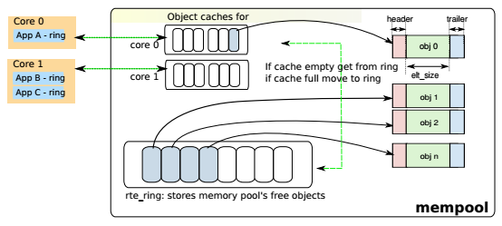
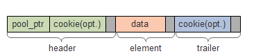

Mempool¶
概述¶
DPDK mempool(以下简称mempool)是储存固定大小对象的内存池。每个mempool都有一个名字，它使用DPDK ring来存储对象，并为每一个lcore提供cache以提升性能。mempool还提供内存填充/对齐机制，以确保将对象公平地布置在DRAM或DDR3 channel上。
在数据面需要内存时应使用mempool来分配，例如报文的存储，而不应使用malloc。
特性¶
内存对齐¶
//TODO 此内容和内存channel和rank有关，见 Memory Alignment Constraints
Cache机制¶
mempool的对象存放在rte_ring中，当mempool所在NUMA节点(socket)上的多个lcore都需要通过这个ring来访问内存对象时，CAS(compare-and-set)操作会影响效率。为了解决这个问题，mempool为每个lcore维护了一个本地缓存(local cache)。lcore需要取出对象时，优先在这个cache取，如果不够，再从ring上拿。
数据结构¶
rte_mempool(librte_mempool/rte_mempool.h)
struct rte_mempool {
char name[RTE_MEMPOOL_NAMESIZE]; /**< Name of mempool. */
struct rte_ring *ring; /**< Ring to store objects. */
phys_addr_t phys_addr; /**< Phys. addr. of mempool struct. */
int flags; /**< Flags of the mempool. */
uint32_t size; /**< Size of the mempool. */
uint32_t cache_size; /**< Size of per-lcore local cache. */
uint32_t cache_flushthresh;
/**< Threshold before we flush excess elements. */
uint32_t elt_size; /**< Size of an element. */
uint32_t header_size; /**< Size of header (before elt). */
uint32_t trailer_size; /**< Size of trailer (after elt). */
unsigned private_data_size; /**< Size of private data. */
#if RTE_MEMPOOL_CACHE_MAX_SIZE > 0
// Per-lcore local cache
struct rte_mempool_cache local_cache[RTE_MAX_LCORE];
#endif
#ifdef RTE_LIBRTE_MEMPOOL_DEBUG
// Per-lcore statistics. */
struct rte_mempool_debug_stats stats[RTE_MAX_LCORE];
#endif
/* Address translation support, starts from next cache line. */
// Number of elements in the elt_pa array
uint32_t pg_num __rte_cache_aligned;
uint32_t pg_shift; /**< LOG2 of the physical pages. */
uintptr_t pg_mask; /**< physical page mask value. */
uintptr_t elt_va_start;
/**< Virtual address of the first mempool object. */
uintptr_t elt_va_end;
/**< Virtual address of the <size + 1> mempool object. */
phys_addr_t elt_pa[MEMPOOL_PG_NUM_DEFAULT];
/**< Array of physical page addresses for the mempool objects buffer. */
} __rte_cache_aligned;
mempool中存储的每一个对象的结构分3部分，首部，数据和尾部。每一部分都填充以做到字节对齐，在调试模式首部和尾部还可以加上cookie。
rte_mempool_cache(librte_mempool/rte_mempool.h)
struct rte_mempool_cache {
unsigned len; /**< Cache len */
void *objs[RTE_MEMPOOL_CACHE_MAX_SIZE * 3]; /**< Cache objects */
} __rte_cache_aligned;
创建¶
rte_mempool_xmem_create (librte_mempool/rte_mempool.c)
- 计算mempool中每一个对象的大小
- 计算mempool总大小
- 调用rte_memzone_reserve分配所需内存空间 memzone相关原理见 Memzone ，它将同时返回虚拟地址和物理地址
- 计算对象分配的起始地址，包括虚拟地址和起始地址
- 调用mempool初始化回调函数，并对每一个对象调用对象初始化回调函数
取出对象¶
核心函数是__mempool_get_bulk(librte_mempool/rte_mempool.h)，这里令n=对象个数，cache_size为cache配置大小，cache_len为cache当前大小， 那么步骤为
- 如果配置的cache_size=0、是单消费者(sc)或者n>=cache_len，则跳到4
- 如果cache_len<n，则从ring申请足够对象放到cache上，否则到3
- 从cache上取出对象，结束
- 在ring上进行出队操作，取出对象
还回对象¶
核心函数是__mempool_put_bulk(librte_mempool/rte_mempool.h)，步骤为
- 如果cache_size=0、是单生产者(sp)或者n大于cache最大限制值，则跳到3
- 将对象添加到cache，然后如果cache_len>=阈值，则将(cache_len-cache_size)个对象还回ring，结束
- 在ring上进行入队操作，还回对象
参考¶
| [dpdk_guide_mpool] | DPDK programmer’s guide - Mempool |